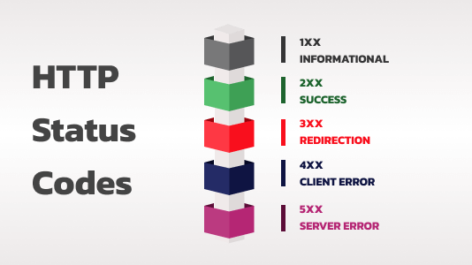

HTTP Status codes and the Information responses

100 Continue
This interim response indicates that the client should continue the request or ignore the response if the request is already finished.
101 Switching Protocols
This code is sent in response to an Upgrade request header from the client and indicates the protocol the server is switching to.
102 Processing (WebDAV)
This code indicates that the server has received and is processing the request, but no response is available yet.
103 Early Hints
This status code is primarily intended to be used with the Link header, letting the user agent start preloading resources while the server prepares a response.
Successful responses
200 OK
The request succeeded. The result meaning of “success” depends on the HTTP method:
- GET: The resource has been fetched and transmitted in the message body.
- HEAD: The representation headers are included in the response without any message body.
- PUT or POST: The resource describing the result of the action is transmitted in the message body.
- TRACE: The message body contains the request message as received by the server.
201 Created
The request succeeded, and a new resource was created as a result. This is typically the response sent after POST requests, or some PUT requests.
202 Accepted
The request has been received but not yet acted upon. It is noncommittal, since there is no way in HTTP to later send an asynchronous response indicating the outcome of the request. It is intended for cases where another process or server handles the request, or for batch processing.
203 Non-Authoritative Information
This response code means the returned metadata is not exactly the same as is available from the origin server, but is collected from a local or a third-party copy. This is mostly used for mirrors or backups of another resource. Except for that specific case, the 200 OK response is preferred to this status.
204 No Content
There is no content to send for this request, but the headers may be useful. The user agent may update its cached headers for this resource with the new ones.
205 Reset Content
Tells the user agent to reset the document which sent this request.
206 Partial Content
This response code is used when the Range header is sent from the client to request only part of a resource.
207 Multi-Status (WebDAV)
Conveys information about multiple resources, for situations where multiple status codes might be appropriate.
208 Already Reported (WebDAV)
Used inside a dav:propstat response element to avoid repeatedly enumerating the internal members of multiple bindings to the same collection.
226 IM Used (HTTP Delta encoding)
The server has fulfilled a GET request for the resource, and the response is a representation of the result of one or more instance-manipulations applied to the current instance.
Redirection message
300 Multiple Choice
The request has more than one possible response. The user agent or user should choose one of them. (There is no standardized way of choosing one of the responses, but HTML links to the possibilities are recommended so the user can pick.)
301 Moved Permanently
The URL of the requested resource has been changed permanently. The new URL is given in the response.
302 Found
This response code means that the URI of requested resource has been changed temporarily. Further changes in the URI might be made in the future. Therefore, this same URI should be used by the client in future requests.
303 See Other
The server sent this response to direct the client to get the requested resource at another URI with a GET request.
304 Not Modified
This is used for caching purposes. It tells the client that the response has not been modified, so the client can continue to use the same cached version of the response.
305 Use Proxy Deprecated
Defined in a previous version of the HTTP specification to indicate that a requested response must be accessed by a proxy. It has been deprecated due to security concerns regarding in-band configuration of a proxy.
306 unused
This response code is no longer used; it is just reserved. It was used in a previous version of the HTTP/1.1 specification.
307 Temporary Redirect
The server sends this response to direct the client to get the requested resource at another URI with same method that was used in the prior request. This has the same semantics as the 302 Found HTTP response code, with the exception that the user agent must not change the HTTP method used: if a POST was used in the first request, a POST must be used in the second request.
308 Permanent Redirect
This means that the resource is now permanently located at another URI, specified by the Location: HTTP Response header. This has the same semantics as the 301 Moved Permanently HTTP response code, with the exception that the user agent must not change the HTTP method used: if a POST was used in the first request, a POST must be used in the second request.
Client error responses
400 Bad Request
The server cannot or will not process the request due to something that is perceived to be a client error (e.g., malformed request syntax, invalid request message framing, or deceptive request routing).
401 Unauthorized
Although the HTTP standard specifies “unauthorized”, semantically this response means “unauthenticated”. That is, the client must authenticate itself to get the requested response.
402 Payment Required Experimental
This response code is reserved for future use. The initial aim for creating this code was using it for digital payment systems, however this status code is used very rarely and no standard convention exists.
403 Forbidden
The client does not have access rights to the content; that is, it is unauthorized, so the server is refusing to give the requested resource. Unlike 401 Unauthorized, the client’s identity is known to the server.
404 Not Found
The server can not find the requested resource. In the browser, this means the URL is not recognized. In an API, this can also mean that the endpoint is valid but the resource itself does not exist. Servers may also send this response instead of 403 Forbidden to hide the existence of a resource from an unauthorized client. This response code is probably the most well known due to its frequent occurrence on the web.
405 Method Not Allowed
The request method is known by the server but is not supported by the target resource. For example, an API may not allow calling DELETE to remove a resource.
406 Not Acceptable
This response is sent when the web server, after performing server-driven content negotiation, doesn’t find any content that conforms to the criteria given by the user agent.
407 Proxy Authentication Required
This is similar to 401 Unauthorized but authentication is needed to be done by a proxy.
408 Request Timeout
This response is sent on an idle connection by some servers, even without any previous request by the client. It means that the server would like to shut down this unused connection. This response is used much more since some browsers, like Chrome, Firefox 27+, or IE9, use HTTP pre-connection mechanisms to speed up surfing. Also note that some servers merely shut down the connection without sending this message.
409 Conflict
This response is sent when a request conflicts with the current state of the server.
410 Gone
This response is sent when the requested content has been permanently deleted from server, with no forwarding address. Clients are expected to remove their caches and links to the resource. The HTTP specification intends this status code to be used for “limited-time, promotional services”. APIs should not feel compelled to indicate resources that have been deleted with this status code.
411 Length Required
Server rejected the request because the Content-Length header field is not defined and the server requires it.
412 Precondition Failed
The client has indicated preconditions in its headers which the server does not meet.
413 Payload Too Large
Request entity is larger than limits defined by server. The server might close the connection or return an Retry-After header field.
414 URI Too Long
The URI requested by the client is longer than the server is willing to interpret.
415 Unsupported Media Type
The media format of the requested data is not supported by the server, so the server is rejecting the request.
416 Range Not Satisfiable
The range specified by the Range header field in the request cannot be fulfilled. It’s possible that the range is outside the size of the target URI’s data.
417 Expectation Failed
This response code means the expectation indicated by the Expect request header field cannot be met by the server.
418 I'm a teapot
The server refuses the attempt to brew coffee with a teapot.
421 Misdirected Request
The request was directed at a server that is not able to produce a response. This can be sent by a server that is not configured to produce responses for the combination of scheme and authority that are included in the request URI.
422 Unprocessable Entity (WebDAV)
The request was well-formed but was unable to be followed due to semantic errors.
423 Locked (WebDAV)
The resource that is being accessed is locked.
424 Failed Dependency (WebDAV)
The request failed due to failure of a previous request.
425 Too Early Experimental
Indicates that the server is unwilling to risk processing a request that might be replayed.
426 Upgrade Required
The server refuses to perform the request using the current protocol but might be willing to do so after the client upgrades to a different protocol. The server sends an Upgrade header in a 426 response to indicate the required protocol(s).
428 Precondition Required
The origin server requires the request to be conditional. This response is intended to prevent the ‘lost update’ problem, where a client GETs a resource’s state, modifies it and PUTs it back to the server, when meanwhile a third party has modified the state on the server, leading to a conflict.
429 Too Many Requests
The user has sent too many requests in a given amount of time (“rate limiting”).
431 Request Header Fields Too Large
The server is unwilling to process the request because its header fields are too large. The request may be resubmitted after reducing the size of the request header fields.
451 Unavailable For Legal Reasons
The user agent requested a resource that cannot legally be provided, such as a web page censored by a government.
Server error responses
500 Internal Server Error
The server has encountered a situation it does not know how to handle.
501 Not Implemented
The request method is not supported by the server and cannot be handled. The only methods that servers are required to support (and therefore that must not return this code) are GET and HEAD.
502 Bad Gateway
This error response means that the server, while working as a gateway to get a response needed to handle the request, got an invalid response.
503 Service Unavailable
The server is not ready to handle the request. Common causes are a server that is down for maintenance or that is overloaded. Note that together with this response, a user-friendly page explaining the problem should be sent. This response should be used for temporary conditions and the Retry-After HTTP header should, if possible, contain the estimated time before the recovery of the service. The webmaster must also take care about the caching-related headers that are sent along with this response, as these temporary condition responses should usually not be cached.
504 Gateway Timeout
This error response is given when the server is acting as a gateway and cannot get a response in time.
505 HTTP Version Not Supported
The HTTP version used in the request is not supported by the server.
506 Variant Also Negotiates
The server has an internal configuration error: the chosen variant resource is configured to engage in transparent content negotiation itself, and is therefore not a proper end point in the negotiation process.
507 Insufficient Storage (WebDAV)
The method could not be performed on the resource because the server is unable to store the representation needed to successfully complete the request.
508 Loop Detected (WebDAV)
The server detected an infinite loop while processing the request.
510 Not Extended
Further extensions to the request are required for the server to fulfill it.
511 Network Authentication Required
Indicates that the client needs to authenticate to gain network access.